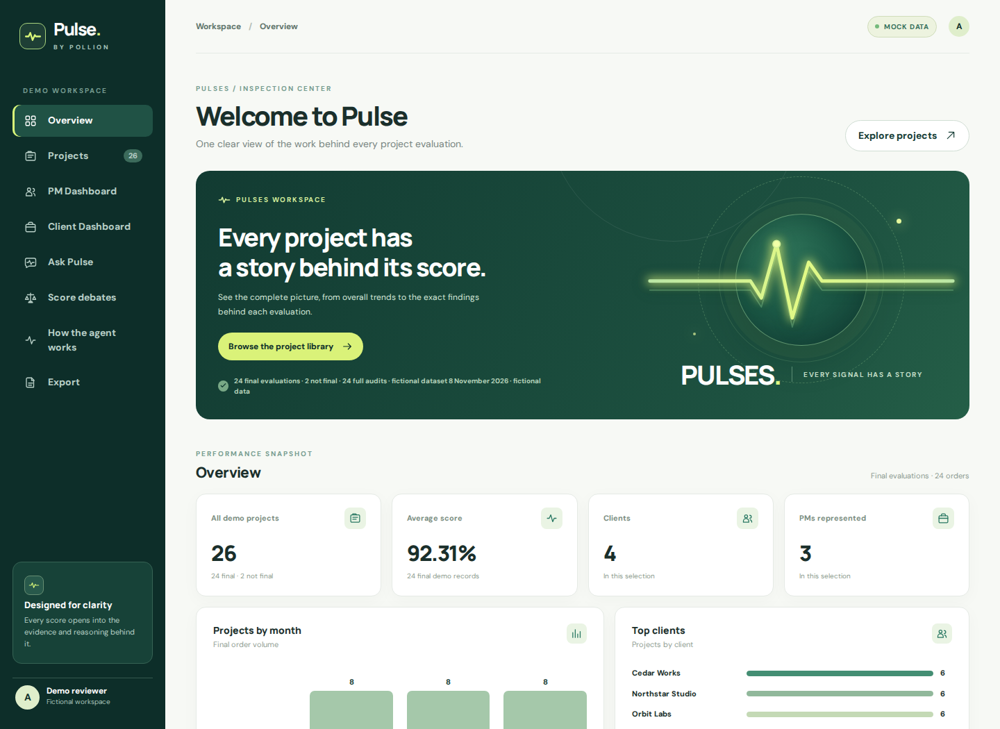
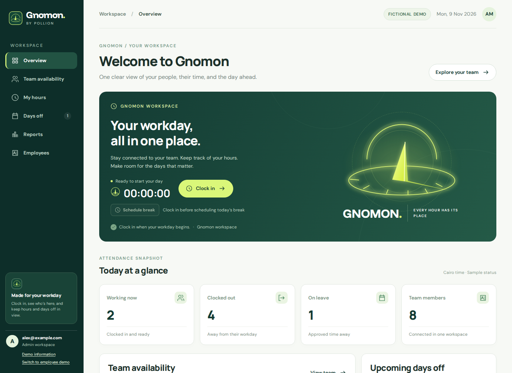

About Me
I'm Seif Eldin Magdy, an AI Automation Engineer at Pollion, based in Cairo, Egypt. I've been working at Pollion since April 2026. I build AI agents, custom workflows and robotic process automation that connect business tools, reduce repetitive work and make everyday operations easier to manage.
At Pollion, I develop AI agents for project reviews and client context, automate company research and lead generation with n8n, and build internal tools for attendance, leave and operational reporting. I connect business tools through APIs and webhooks to reduce manual work.
My AI work brings together prompt engineering, advanced prompting, open-source AI and AI content generation. I use n8n, APIs and webhooks to build agent workflows, and work with vector databases and retrieval-augmented generation (RAG) to connect AI with useful business knowledge. I also use vibe coding to prototype and develop custom tools.
For enterprise automation, I work with UiPath, Orchestrator and the RE Framework across Excel, user interfaces, email and document processing. My experience with IBM integration tools helps me connect systems, while automation security and human-in-the-loop steps keep sensitive decisions under human review.
I started in data science, including a Data Scientist internship at InternBoot in 2025. That background in Python, machine learning and data analysis now supports my work in intelligent and agentic automation. I hold a Bachelor's degree in Management Information Systems.
Featured Projects
AI agents, business automation and the data-science work that started my journey.
Explore the thinking behind the work — then try it yourself.
Showing all 7 projects.
Built together with Ziad. Used by the Pollion team.
3 connected systemsPulse.
THE PROJECT INTELLIGENCE AGENT
Every finished project.
A clearer picture.
An agent that reviews completed projects, explains delivery scores and builds context around each client.
Gnomon.
A WORKSPACE FOR THE WORKING DAY
The whole workday.
One shared view.
Attendance, breaks, working hours and time off, connected in a workspace for employees and managers.
Lead engine.
FROM FIRST SIGNAL TO NEXT STEPMany moving parts.
One connected process.
A research and enrichment workflow that connects targeting, contact checks and ranked lead delivery.
Explore realistic interfaces with fictional data. Every project opens here in the same tab.
My data-science foundation
Stroke Severity Prediction
Developed a comprehensive end-to-end machine learning pipeline using clinical and environmental data to predict stroke severity.
96.3% accuracy with XGBoost
40% reduction in prediction time
Deployed interactive Gradio application
Implemented advanced preprocessing, feature engineering, and clustering techniques. Trained multiple models including Logistic Regression, Random Forest, LightGBM, and XGBoost. Applied SHAP and LIME for model interpretability.
Heart Disease Prediction
Built a predictive classification system using the Cleveland Heart Disease dataset to identify patients at risk.
88.5% accuracy
95.2% ROC AUC score
12% performance improvement
Performed comprehensive data preprocessing, PCA, and advanced feature selection using RFE, Chi-square test, and Random Forest importance. Deployed an interactive web application using Streamlit.
Titanic Survival Prediction
Classic machine learning project analyzing passenger data to predict survival outcomes on the Titanic using Random Forest classifier.
Comprehensive EDA and visualization
Feature engineering on passenger data
Random Forest classification model
Performed extensive exploratory data analysis, handled missing values, engineered features from passenger information, and built a predictive model to determine survival probability based on various passenger attributes.
Gym Members Churn Prediction
Developed a machine learning model to predict gym membership churn, helping fitness centers identify at-risk customers and implement proactive retention strategies.
Binary classification for churn prediction
Customer clustering and segmentation
Feature importance analysis
Analyzed customer data including demographics, visit frequency, contract details, and engagement patterns. Built predictive models using Logistic Regression and Random Forest to identify churn probability. Performed clustering analysis to segment customers and develop targeted retention strategies.
Automation & Technical Skills
AI & Prompt Engineering
- AI Fundamentals
- Prompt Engineering
- Advanced Prompt Engineering
- AI in Business
- AI Content Generation
- Open-Source AI
AI Agents & Knowledge
- AI Agents
- AI Agent Workflows
- Vector Databases & RAG
- Custom AI Workflows
- Agentic Automation
- Human-in-the-Loop
Workflow Automation
- AI Automation
- n8n Automation
- APIs & Webhooks
- API & Email Integration
- Automation Security
- Vibe Coding
- AI automation capstone development
UiPath & RPA
- UiPath Automation
- RPA
- Excel & UI Automation
- UiPath Orchestrator
- RE Framework
- OCR & Document Processing
- AI Agents with UiPath
Enterprise Integration
- Intelligent Automation
- Enterprise Automation
- IBM ACE & API Connect
- IBM DataPower & MQ
- Apache Kafka
- REST & SOAP
- OAuth 2.0, TLS & API Security
Data Science Foundation
- Python & SQL
- Machine Learning Pipelines
- Scikit-learn & XGBoost
- Data Analysis & Feature Engineering
- SHAP & LIME
- Power BI & Tableau
Certifications
British Board (200 hours)
Spark Institution (200 hours)
DataCamp - Python (90 hours)
DataCamp - Python
DataCamp - SQL
Sprints x Microsoft
Mosh
Sprints x Microsoft
Get In Touch
Have a process to automate or an AI agent to build? Let's discuss your workflow, the tools your team uses and where automation can make a difference.
Cairo, Egypt